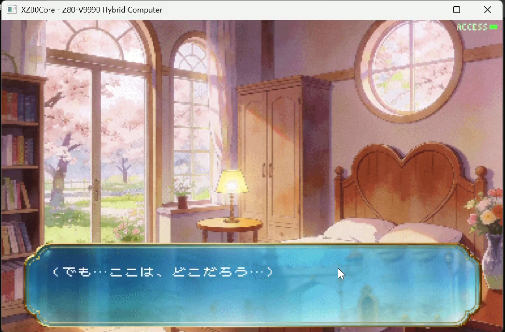
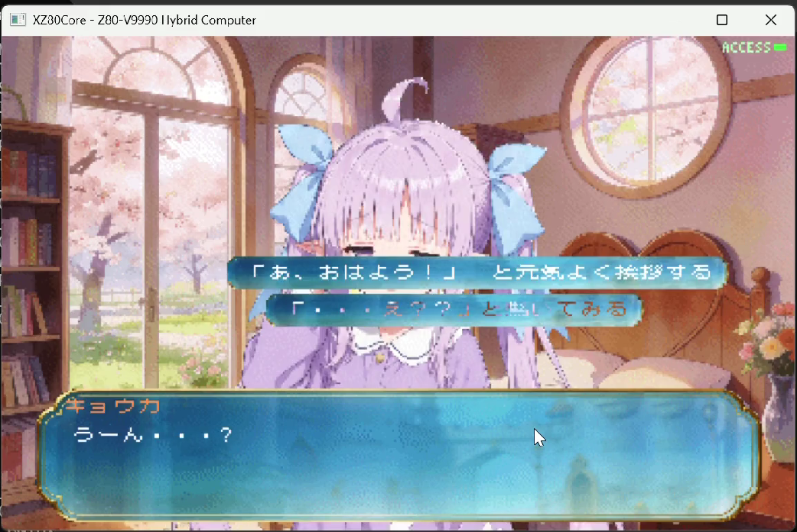

はじめに——作り直す決心
前回は、XZ80 VMのZ80ランタイム内部の、 バンク切り替えとVNBパーサーの構造を解説した。 実は、実装を進めていく中で、ある決断をしていた。
あのVNStudioのXZ80ランタイムを、根本から作り直す——。
その後、XZ80ランタイムの開発は、困難に直面していた。 今回はその歩みを、六つのトピックとしてお伝えしたい。
第1章：ゼロベース再実装——「堆積物」を、設計へ還す
これまでのXZ80ランタイムは、正直に言えば「堆積物」だった。 機能ごとの後付け、暫定のno-op化、引数の読み飛ばしが混在。 新機能を足すたびに、なんらかの不具合が発生するようになり、足場が軋んでいた。
そこで、取り決めたVNStudioの基本機能を、 最初からすべて新たに実装する前提でアーキテクチャを組み直す計画を立てた。 旧実装は削除せず丸ごと退避し、これまでに蓄積したノウハウである、 「Z80固有の罠」「V9990の癖」という貴重な経験を生かし、 新実装には設計原則として最初から織り込むことにした。
また、計画上は「ゼロベース」だが、実装を進めるにあたって、 「常に動く形を確認しながら、段階的に移行」とした。 各フェーズでビルドと起動selftestを回帰ゲートにし、 出荷中のランタイムを一度も壊さないまま、目標アーキテクチャへと作り替えていく。
再実装は基盤のクリーン化から始まった。
cp/jrの比較連鎖だったステートマシンは
jp (hl)によるディスパッチテーブル方式へ。
入力処理は独立モジュールに、バンク分割を前提としてコード配置インフラも整備。
その土台の上に、fade/white/shake/moveの演出系、
PCM/DMAによる音声系、そしてconfig系コマンド群——
テキスト速度、オートモードを実装していく。
増築を重ねた家を、住んだまま建て替える。
回帰テストという足場を用意することで、この困難を乗り切ることができた。
第2章：自己診断という方法論——「謎の不具合」の構造と戦う
XZ80 VMの画面は、V9990を三枚重ねた三画面合成で成り立っている。 panel0が背景、panel1が立ち絵、panel2がテキストUI——。 この合成系には、ある厄介な性質があった。 新機能を実装するたびに、どこかで「謎の不具合」が発生するのだ。
背景の黒つぶれ、フェードインのフラッシュ、初回テキストの不可視、立ち絵連打の残像——。 個々のバグはそのつど修正してきた。しかし「叩くたびに別の場所から出る」という 構造そのものが問題だった。
そこで発想を変えた。バグを追うのではなく、 ホスト側の合成実装（C++）とランタイム側（Z80アセンブラ）の間の 「使用契約」を不変条件として明文化し、 ホストが本当にその契約を守っているかを、selftest群で全数検証する—— いわば、VM自身による自己診断である。
結果、9項目の契約に対して32種のselftestを追加し、 7件の潜在問題（S1〜S7）を洗い出した。 VBlank割り込みの取り逃し、モード変更がフレームバッファへ1フレーム遅れて反映される問題—— いずれも「たまにしか出ない謎の不具合」の正体たちだ。 修正すべきものはすべて修正し、既存回帰テストは37種全PASS。 既知バグゼロの状態で、この診断計画はクローズした。
バグを一匹ずつ叩くのではなく、
バグが生まれる構造そのものを診断する。
遠回りに見えて、これが最短の道だった。
第3章：CPU1、目覚める——サウンド専用CPUと、灯るアクセスランプ
XZ80 VMはVol.8で語ったとおりマルチコア構想を持つが、 これまでは眠り続けていた二つ目のZ80が、ついに目を覚ます。
役割はサウンド専用CPU兼I/O監視CPU。 2基のOPN音源のタイマ割り込みをCPU1へ配線し、 開発中のFM音源ドライバをメインCPUの負荷ゼロで走らせるための土台を作った。 ゲームロジックと音楽演奏を別のCPUが受け持つ—— かつてのアーケード基板と同じ、正統派の設計である。
もう一つの仕事が、アクセスランプだ。 ROMバンク切り替えによるアセット読み出しをホストが計数し、 CPU1がそれをポーリングして、画面右上に小さなLEDを灯す。 ファイルアクセスのたびにチカチカと明滅するランプ—— かつてのPCがフロッピーを読むときの、あの「チカチカ」の再現である。
実装にあたっては、第2章の自己診断の方法論をそのまま横展開した。 「CPU1はサウンド専用CPUとして成立するか」を診断ペイロード7本とselftest 9種で先に実証し、 14/14 PASSを確認してから本番実装へ進む。 診断で骨格を証明し、本番はその骨格をなぞる——この順序が、手戻りをゼロにした。

音声まわりでは、もう一つ大きな進展があった。 MSM5205 ADPCMデコーダの実装である。 これまでの生8bit PCM音声はシンプルな実装ではあったが、非圧縮であるためROM容量を圧迫し、 VMとの連携の影響かバグも多く発生していた。 そこで4bit/サンプルのADPCM（2:1圧縮）をデコードコアごと移植し、 既存のPCM/DMAチャンネルにモードビット1本を追加するだけという改修で、 再実装を完了した。
第4章：速度は体験である——計測が暴いた二つのボトルネック
機能が揃ってくると、次に気になるのは「体感」だ。 この二ヶ月では、ユーザー体験に直結する二つの速度問題を、 徹底した計測で解決した。
一つ目は起動時間。
電源投入からタイトル画面まで640フレーム（10.7秒）かかっていたものを、
218フレーム（3.6秒）——約2.9倍まで短縮した。
さらに、LZSS圧縮背景のデコーダが1バイト読むごとにRAM往復とマッパー再設定を繰り返していた問題も、
裏レジスタ（EXX）に読み取り状態を常駐させる方式へ書き直し、約2.6倍に高速化した。
二つ目はsayの行送り。
キーを押してから次のテキストが表示され始めるまで、
実測62フレーム（約1.03秒）——テンポの良い読書体験とは言い難い数字だった。
フレームごとの画素計測、Z80のフェーズトレース、PCサンプリングの3点で
この62フレームの内訳を完全に分解したところ、
「高速化したはず」のパネルクリアが、実際の描画経路（バックバッファ）では
旧来のCPUフィルに落ちていたこと（36フレーム）、
そしてテキストウィンドウ画像26KBを毎回ROMから再転送していたこと（24フレーム）が判明した。
; 従来: 全面クリア(36F) + 26KB画像の再転送(24F) ≒ 毎回60フレーム
; 新設計: 「無垢のテキストウィンドウページ」をオフスクリーンVRAMに
; 一度だけ退避(stash)し、以後はVRAM間ブロック転送1発で復元
call TXT_RestoreTextUiPageFromStash ; HMMM一発 → 2フレームに短縮対策は、クリアと再転送を「両方やめる」こと。 クリア済み＋画像描画済みの無垢のページをオフスクリーンVRAMに一度だけ保存しておき、 以後の行送りではV9990のVRAM間ブロック転送（HMMM）一発で復元する。 結果、62フレームは2フレームへ——約31倍の高速化となった。
さまざまな事象を「計測できるようにする」ことで、様々な問題を解決できるのだ。
第5章：FM音源ドライバの実装に向けて
Vol.9で語った 「失われたゲーム音楽文化のサルベージ」 ——その構想を実現すべく、今も開発を進めている。
まず、OPNA（YM2608）のソフトウェアエミュレーションによる FM音源ドライバをunity側に仮実装した。FM 6ch＋SSG 3chのステレオ構成を、 レジスタシャドウとTick駆動シーケンサ、ストリーミングAudioClipで駆動する。 MMLが描かれたテキストファイルをフォルダに置くだけで、 スクリプトから「fmplay bgm」の1行でＦＭ音源を鳴らすことができる。
そして、これらの２系統のFM音源を統合した、オリジナルのモノにしたいと考えている。
OPNA(YM2608)ドライバ — PC8801のサウンドボード2、X68000を想定
OPLL(YM2413)ドライバ — MSX2のFMPACを想定
30年以上前の「FM音源による音楽」を、 当時のままのニュアンスで鳴り響かせる—。 単なるエミュレーションではない、当時の「音楽性の再現」を目指してすすめていく。
なお、XZ80側でもCPU1のサウンド専用化（第3章）によって受け皿は整った。 Z80アセンブラによるFM音源ドライバの実装は、次の大きな実装の山場となるだろう。
第6章：ユーザーインターフェイスの改善
選択肢まわりでは、choicewindow専用の背景画像に対応した。 しかも幅は固定ではない——選択肢の文字数に応じて画像が可変幅で伸縮し、 選択中の項目は白文字、非選択は暗色と、視認性も一新した。 テキストウィンドウの行間を4px詰め、画像の位置ずれを2px単位で追い込む—— 地味だが、画面の「品」はこういう場所に宿る。
画質面では、K-means法によるパレット生成を立ち絵にも実装した。 カラーパレット256個という制約の中で、32000色の中から最良の色割り当てを行う。 立ち絵の輪郭に出ていたアルファフリンジ（縁の色にじみ）も改善し、 Unity版と見比べてもあまり遜色のない絵が、Z80の画面に並ぶようになった。

おわりに——次の実装へ向けて
こうして振り返ると、今回は「作り直す」「診断する」「計測する」「磨く」——。 新機能の実装は少なく、都合の良い表現をすれば、次に向けて足場を固める時期になった。
だが、それでいいのだと思いたい。 堆積物だったランタイムは、より良い設計で作り直され、 謎の不具合は構造ごと診断されるようになり、 体感速度は数字で証明されて、より具体的に改善されるようになった。 そして、ようやく二つ目のZ80の駆動に着手することができた。 XZ80 VMは、決して俊足ではないが確実に歩みを進めている。
次回は、二つ目のZ80 CPUで、FM音源ドライバが鳴り始める話を—— お届けしたい。